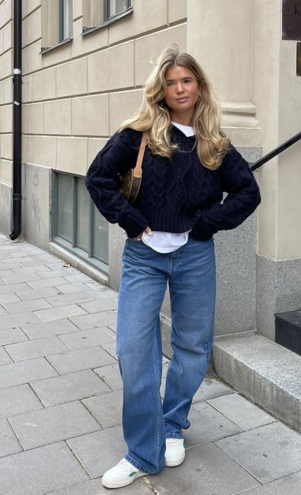
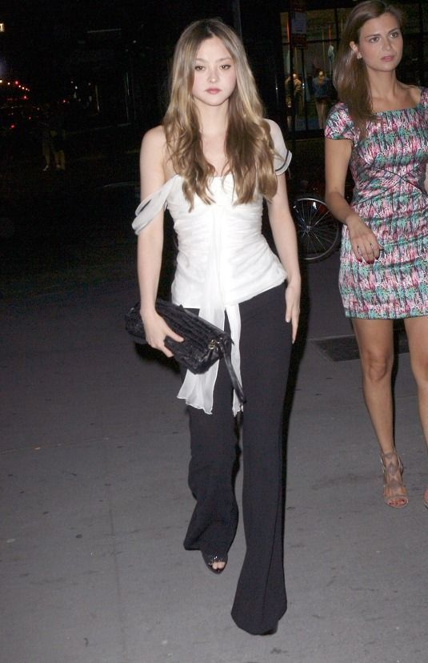

Styles
There are a lot of different clothing styles, but here are 4 styles I like and you also might like:
- streetwear
- scandi styles
- y2k
- vintage
Streetwear

bron: https://nl.pinterest.com/pin/2674081022250063/
Streetwear is a style of casual clothing that originated in the United States in the 1970s. It is often associated with hip hop culture, skateboarding, and alternative fashion. There are many different styles of streetwear, but some common elements include oversized t-shirts, hoodies, and sneakers. Streetwear can be dressy or casual, depending on how it is styled. One style of streetwear that has become popular in recent years is “athleisure.” This style combines sporty and stylish elements to create a look that is both comfortable and fashionable. Athleisure items include joggers, hoodies, and Sneakers. Another popular style of streetwear is “grunge.” This look includes ripped jeans, flannel shirts, and Doc Martens boots. Grunge fashion was popularized by the grunge music scene of the early 1990s.
bron: https://1883magazine.com/the-characteristics-of-streetwear/
Click here for a gallery full of streetwear inspo
Scandi styles
bron: https://nl.pinterest.com/pin/2251868555470897/
This is a styles that is designed by scandinavians. They prove that you should always believe in the power of basics. Items that you fall back on again and again. A good pair of jeans, white shirt, a simple t-shirt. Pieces that are indispensable in everyone’s wardrobe. Because of its comfort and practicality. Our tip: Invest in neutral pieces that you can combine well with each other. If you have the basics in order, you always have a good start for every outfit.
Simplicity is key, but an item in an statement color, a catchy print or a funny detail will give your outfit that personal touch. According to Scandinavian women, it’s all in details and contrast makes an outfit more interesting.
bron:https://www.shopperella.net/how-to-dress-like-an-scandinavian/
Click here for a gallery full of scandi inspo
y2k

bron:https://nl.pinterest.com/pin/1196337398352280/
The Y2K aesthetic is radically distinctive and inspired by the mid-’90s and early 2000s when the internet became more popular during the dot-com boom. This style is typically quite futuristic with a slightly retro edge – think shiny materials, chunky sneakers, pleated skirts, baguette bags, and colorful sunglasses. With the massive technological advancement peak, viewers were optimistic and cautious about the future and how it could transform our lives
bron: https://www.thetrendspotter.net/y2k-fashion/
Click here for a gallery full of y2k inspo
vintage
bron:https://nl.pinterest.com/pin/87186942777128398/
Vintage clothing is a generic term for garments originating from a previous era, as recent as the 1990s. The term can also be applied in reference to second-hand retail outlets, e.g. in vintage clothing store. While the concept originated during World War I as a response to textile shortages,[1] vintage dressing encompasses choosing accessories, mixing vintage garments with new, as well as creating an ensemble of various styles and periods. Vintage clothes typically sell at low prices for high-end name brands. Vintage clothing can be found in cities at local boutiques or local charities, or on the internet, e.g. eBay, depop Etsy, or through digital second-hand shopping websites. Vintage fashion has seen a reemergence in popularity within the 21st century due to increased prevalence of vintage pieces in the media and among celebrities, as well as consumer interests in sustainability and slow fashion.
bron: https://en.wikipedia.org/wiki/Vintage_clothin
Click here for a gallery full of vintage inspo